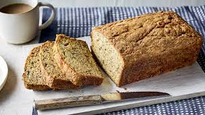

Banana bread recipe

Ingredients
- 1-3/4 cups all-purpose flour
- 1-1/2 cups sugar
- 1 teaspoon baking soda
- 1/2 teaspoon salt
- 2 large eggs, room temperature
- 2 medium ripe bananas, mashed (1 cup)
- 1/2 cup canola oil
- 1/4 cup plus 1 tablespoon buttermilk
- 1 teaspoon vanilla extract
- 1 cup chopped walnuts
Steps
- Preheat oven to 350°. In a large bowl, stir together flour, sugar, baking soda and salt. In another bowl, combine the eggs, bananas, oil, buttermilk and vanilla; add to flour mixture, stirring just until combined. Fold in nuts.
- Pour into a greased or parchment-lined 9x5-in. loaf pan. If desired, sprinkle with additional walnuts. Bake until a toothpick comes out clean, 1-1/4 to 1-1/2 hours. Cool in pan for 15 minutes before removing to a wire rack.